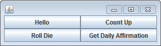
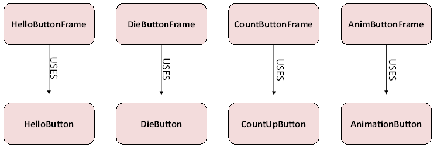
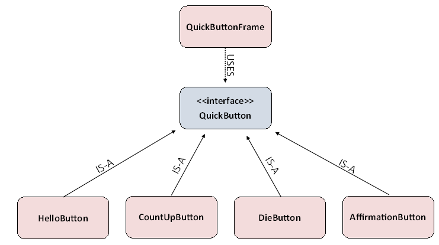

Located in sacco.jar is a way for you to create a very simple window with buttons named QuickButtonFrame. A QuickButtonFrame is not a very good class all on its own. Looking at the API should reveal that there are not very many methods, and one important method is named addQuickButton and it takes in a QuickButton as a parameter.
QuickButton is NOT a class that you can construct ( new QuickButton() ).
It's an interface with the following methods:
(DO NOT COPY THIS INTO YOUR PROJECT. IMPORT IT FROM SACCOJAR)
public interface QuickButton
{
//Returns what the button's label should be
public String buttonLabel();
//A method that will be run when pressed
public void whenPressed();
}
This allows you to create objects that will define how a button reacts when it's pressed.
The HelloButton class:
Create a new class named HelloButton, which implements the QuickButton interface.
Implement the methods so that there is a label of "Hello", and when the button is pressed "Hello World!!!" is printed.
Now that you've created the HelloButton class, add a main method that will do the following (look at the QuickButtonFrame API if you're not sure how to do it):
- Construct a new QuickButtonFrame, either defining it to have 1 row and 1
column, or by calling the default constructor.
- Construct a HelloButton object and use the addQuickButton method to add it to
the QuickButtonFrame
- Launch the QuickButtonFrame
Run the main method. If done properly, a window will pop up with a single button that says "Hello". Clicking that button should produce "Hello World!!!" on the terminal window.
Assignment:
Create three more objects to help you create the following QuickButtonFrame. WARNING: You will crash the program if you add too many buttons to the frame. Make sure you indicate the appropriate number of rows and columns in the constructor of the QuickButtonFrame.

Each QuickButton should function differently:
- Hello prints out "Hello World!!!" like before
- Roll Die will simulate rolling a six sided die. It should print out "You
rolled a ____" with a number from 1 to 6.
- Count Up will first print out 0, but each time it's pressed the number should
increase by 1. You will need instance fields in this object.
- Get Daily Affirmation An affirmation is a statement that makes you feel
good about yourself (for example: "You are an amazing person"). When this button is pressed, it should print out a
random affirmation. You should have at least three different affirmations.
Your instance field should be a String[], not a series of String variables.
This way you can avoid having an ugly chain of if statements.
QuestIons to ask yourself:
1) Why will the following not compile: QuickButton q = new QuickButton();
2) At which point does Polymorphism occur?
3) Why doesn't the QuickButtonFrame need to have an addHelloButton, addCountUpButton, addDieButton, or addAffirmationButton method?
4) When writing a program, the compiler checks to make sure that any methods being called exist before it can fully compile. When Mr. Sacco wrote the QuickButtonFrame class, he used methods like buttonLabel and whenPressed. At the time neither the HelloButton, CountUpButton, DieButton, nor the AffirmationButton existed. Why did the compiler allow his code to compile if those classes were nowhere to be found?
Why use the QuickButton Interface?
Before the QuickButton Interface existed, we would have had to write a different Frame for every single different Button that we created.

The QuickButton Interface allows us to write one Frame that deals with anything of the QuickButton type, meaning it can be used to handle any Button we create that implements the QuickButton interface.
